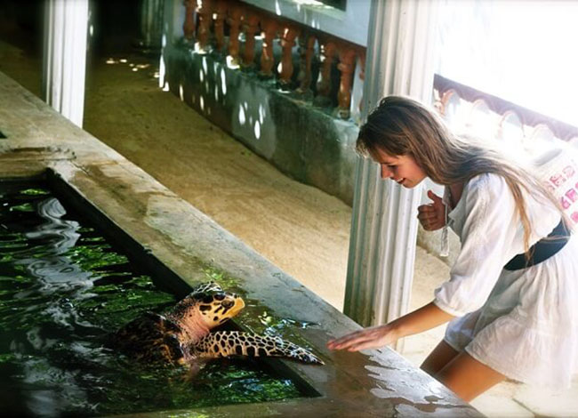
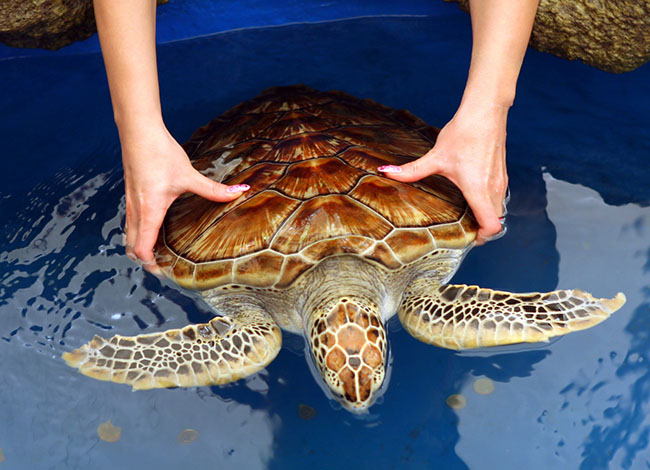
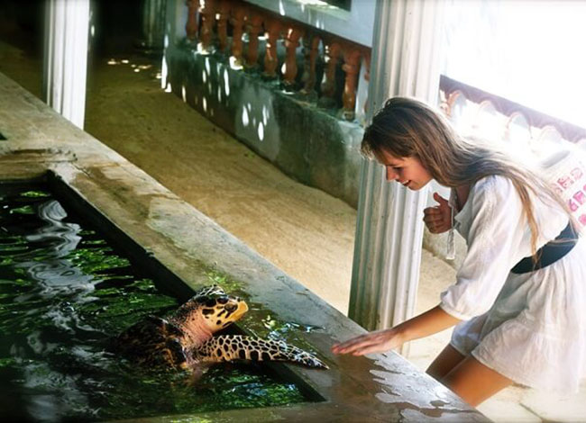
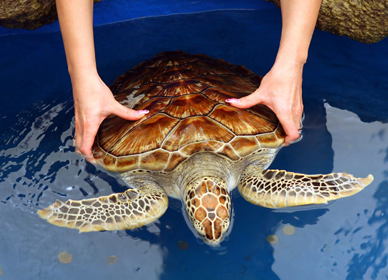
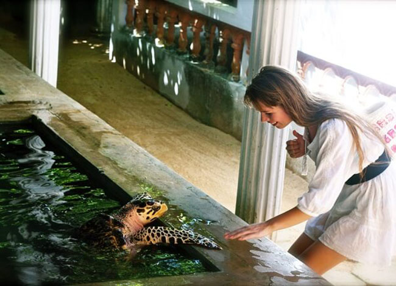
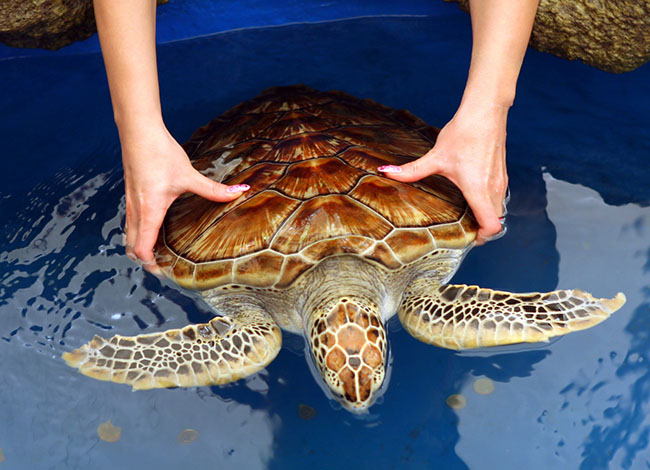

Turtle populations are attacked at all stages of their lives, both from natural and human pressures and all species of sea turtle are now classed as endangered. Without intervention, we may lose these beautiful, ancient creatures from our oceans forever. The natural life cycle of marine turtles is tough enough without the added pressure from humans, and it is no wonder their numbers are drastically declining.
Our aim is to prevent further decline of their population and protect turtles by ensuring viable nesting and feeding populations of these magnificent ancient creatures. Sea turtles of all different varieties, including the Green, Loggerhead, Hawksbill, and Olive Ridley turtles as well as the White Turtle, which is thought to be born once in a million, are seen. It is an amazing experience to release newborn turtles into the ocean, but it is only permitted after 6 o'clock in the evening when the sky has darkened and the water is safer for them.


The Turtle Conservation Project is a great way to learn about sea turtles and how to help them. It is available throughout the year and can be visited anytime between 7:00 AM and 8:00 PM. If you are interested in releasing baby turtles into the ocean, you should book to enter to the Turtle Conservation Project 5:30 PM or after. The duration of the stay inside the Turtle Conservation Project is around 30 – 60 minutes. We hope you have a great time visiting the Turtle Conservation Project!